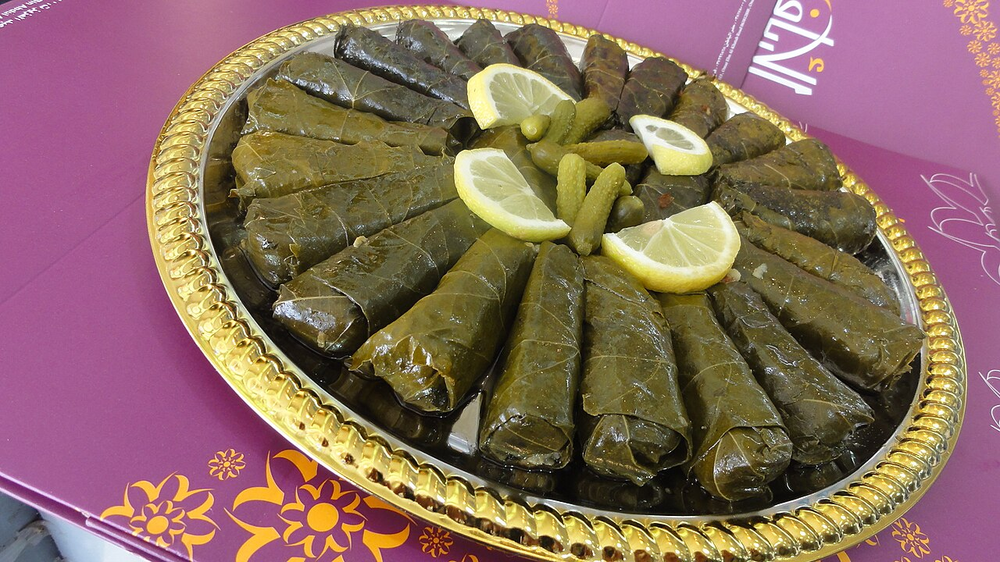
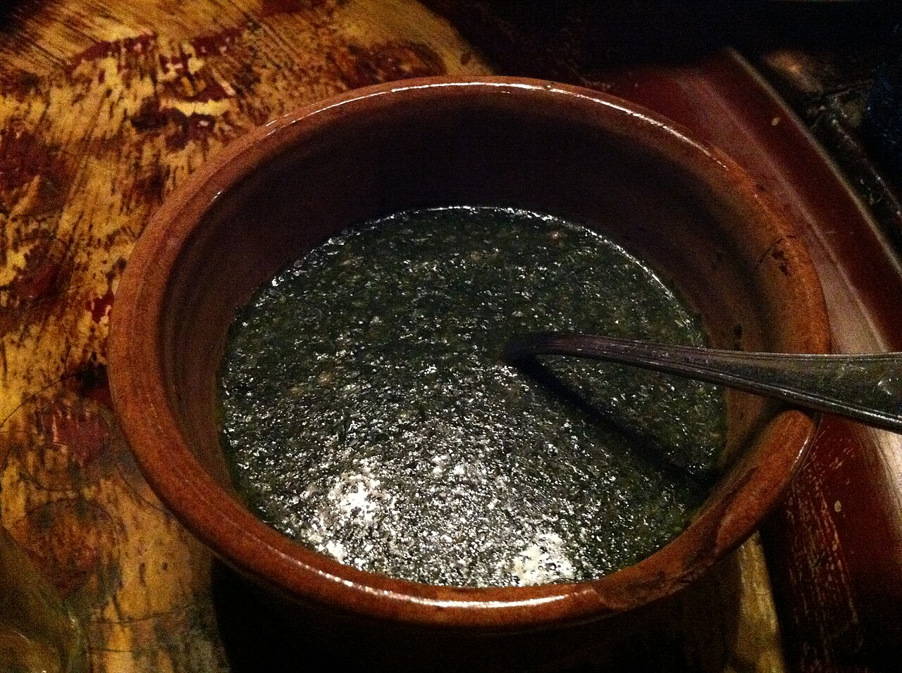
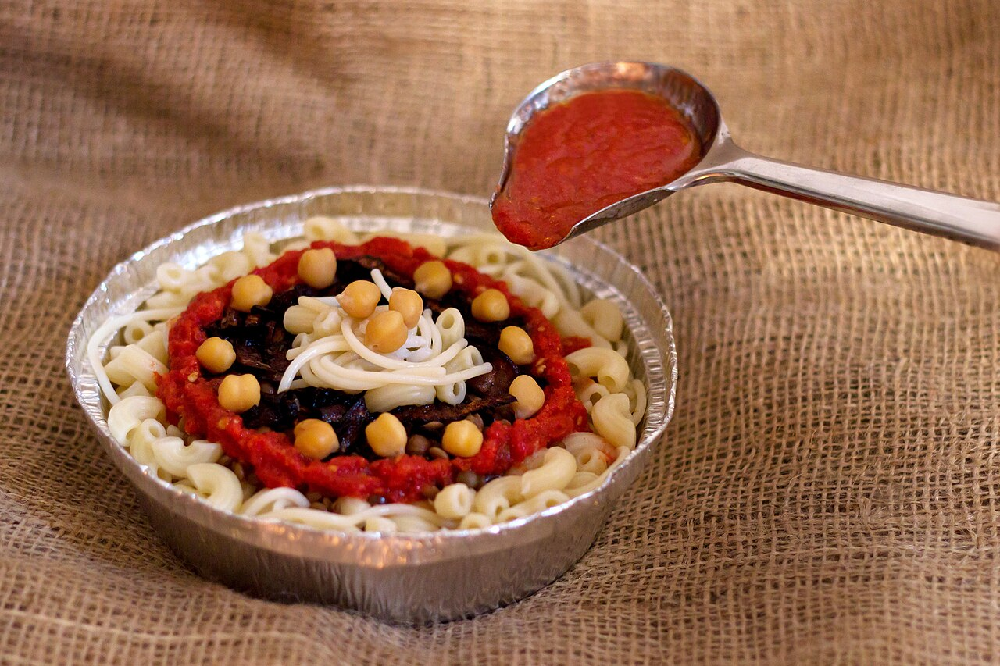

Mahshy 2
By Mkevy, via Wikimedia Commons.

CC BY-SA 4.0. Resized to 1280 pixels wide by Wikimedia; cropped to fit in the app. The resized image and display crops are shared under the same license.
Real photographs of Egyptian dishes, used under the photographers’ public Creative Commons licenses. The authors do not endorse Food Hub.

By Mkevy, via Wikimedia Commons.
CC BY-SA 4.0. Resized to 1280 pixels wide by Wikimedia; cropped to fit in the app. The resized image and display crops are shared under the same license.

By Habib Mhenni / Wikimedia Commons.
CC BY-SA 3.0. Resized to 1280 pixels wide by Wikimedia; cropped to fit in the app. The resized image and display crops are shared under the same license.
The molokhia is pictured on its own; chicken and rice are serving accompaniments in our recipe.
By Basma, via Wikimedia Commons. Using the version edited by Ibrahim.ID and PetarM.
CC BY-SA 4.0. Resized to 1280 pixels wide by Wikimedia; cropped to fit in the app. The resized image and display crops are shared under the same license.
You may reuse these photographs, including commercially, subject to their linked licenses: credit the authors, link the source and license, identify changes, and license adaptations under the same or a compatible license.
Photograph licenses apply to the images, not to Food Hub’s separate application code. Detailed source record.